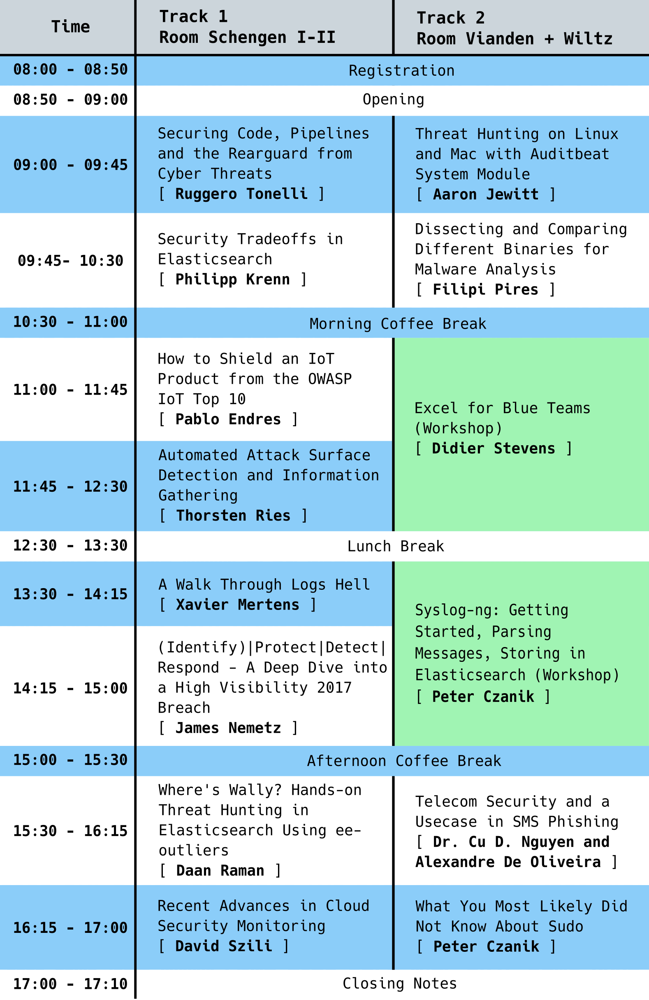

Program

Securing Code, Pipelines and the Rearguard from Cyber Threats
Years ago, we broke operations and development silos, embraced observability and distributed tracing, now we are breaking the security silo: the same way we blended development, operations, and database engineering, we have to embed security in the whole process. Early threat modeling is necessary, and security people have to join platform and application design at an early stage. In order to protect company assets from increasingly sophisticated cyber threats, we need to adopt continuous security analysis on code and infrastructure as an essential part of our CI/CD pipelines. New tools and workflows are required, but most of all, we have to complete the cultural switch.
Keywords: DevOps, DevSecOps, Security, Threats
Speaker
Ruggero TonelliRuggero is a systems engineer focused on performance, automation, and security with a broader experience in architecting and running large-scale, resilient distributed systems. Currently, he is working as Principal Site Reliability Engineer @Netquest. Previously, he was leading the Systems and Data Engineering Team within a cyber threat intelligence company. Continuous improvement advocate and Chaos Engineering practitioner, Ruggero has spent 10+ years on defensive security, mostly using Open Source tools. |
Threat Hunting on Linux and Mac with Auditbeat System Module
Many people are building a custom alerting and monitoring systems for Windows using Sysmon and Elastic Stack, but until recently, there hasn't been a reliable way to centrally monitor activity on a wide variety of Mac and Linux systems for much of the information that Sysmon gives you. You could collect auditd and system logs, but each system has differently formatted logs, and the information provided may not be as robust or helpful.
Enter the newly released Elastic Auditbeat System module; it is like Sysmon for Linux. Monitor a fleet of Linux systems for processes, installed packages, sockets, users, and host information. In this talk, we will discuss the Auditbeat System module, advantages and disadvantages, tips for configuring it, and how to use this data to monitor and hunt for intrusions using Kibana.
Keywords: Threat Hunting, Elastic Stack, ELK, Network Forensics
Speaker
Aaron JewittAn American Expat living in Frankfurt, when Aaron is not hunting for hackers, he loves skiing and mountain biking, and he is always busy trying to keep up with his three boys. After spending 10 years at the NSA, Aaron has moved from the Red side to the Blue side; he has gone from being the hunted to being the hunter. Aaron is currently a Security Analyst at Elastic building Threat detection analytics in a distributed cloud-based environment. |
Security Tradeoffs in Elasticsearch
The NoSQL ecosystem thrived on combining scalability and simplicity. This talk focuses on some assumptions we built Elasticsearch on, which helped the ease of use initially, but turned out to be less than perfect for security in the long run:
- Binding to all interfaces and broadcasting join requests to the whole subnet makes clustering simple.
- Running as root is the straightforward option.
- Using a general-purpose programming language for scripting adds lots of features.
- Guessing the content-type of a request is fine.
- Default passwords and clear-text password files are a reasonable tradeoff.
- Docker and distributed systems play well with your security efforts.
- Generating TLS certificates is easy.
- Everyone will turn on security, and defaults are easy.
Keywords: Best-practices, Anti-patterns, Lessons-learned, Elasticsearch
Speaker
Philipp KrennPhilipp lives to demonstrate interesting technology. Having worked as a web, infrastructure, and database engineer for over ten years, Philipp is now working as a developer advocate at Elastic - the company behind the Elastic Stack consisting of Elasticsearch, Kibana, Beats, and Logstash. Based in Vienna, Austria, he is constantly traveling Europe and beyond to speak and discuss open-source software, search, databases, infrastructure, and security. |
Dissecting and Comparing Different Binaries for Malware Analysis
This talk will demonstrate different kinds of structures in binaries such as PE (header and sessions), ELF (header and sessions), PDF (header/body/cross-reference table/trailer). We will discuss how each session works within a binary and where it would be possible to "include" a malicious code.
Keywords: Malware Analysis, Ransomware, Virus
Speaker
Filipi PiresFilipi has been working as Senior Security Systems Engineer (Pentester) at EPAM Systems in Kraków-Poland and as Global Research Manager at Hacker Security. He worked for 4 years as Cyber Security Specialist at Trend Micro in São Paulo-Brazil, also served as University Professor for Information Security Courses - Graduate and Postgraduate (FIAP and UNIBTA). Postgraduate in Systems Engineering, where he defended the thesis "RANSOMWARE: How to protect your company from this cybernetic pest." Filipi lectured awareness in companies explaining the "Dangers of the Internet!" and "Malware Analysis." In addition, he has spoken at several security events in Brazil, such as BHack/Mind the Sec and Roadsec (Belo Horizonte / Porto Alegre / Curitiba). Filipi is the author and technical trainer of the course "Malware Analysis Fundamentals." |
How to Shield an IoT Product From the OWASP IoT Top 10
The "S" in IoT stands for security. I have read this line so many times on blogs and on twitter, that I think it is time to do something about it. But how do we make an IoT product secure? Or how do we design a secure product from the start? The answer to the last question is easy, but doing it for an existing product, that is a big challenge. It probably cannot be done in one release, but you have to start somewhere.
This talk with walk you through IoT, its components, some principles to design a secure product, the OWASP IoT Top 10 and how to address them, setting up security requirements and controls, and last but not least analyze two popular IoT use cases: a GPS tracker and smart cities irrigation system. These should lay a fertile ground for further discussion.
Keywords: IoT, Security controls, OWASP, Top 10, Requirements
Speaker
Pablo EndresPablo Endres is the founder and CEO of SevenShift GmbH, an IoT boutique security company. He is an experienced Security Consultant, Professional Hacker, Technological Solution Architect, and published author. He is a computer engineer, and he holds a handful of security certifications ISC2 CISSP, CompTIA Security+, and ISECOM’s OPSA + OPST. Pablo’s career has taken place mostly doing security in a variety of industries, like wireless phones, VoIP solutions, and Cloud Service providers, Banks, contact centers, and university labs. Pablo has founded multiple companies in different continents and enjoys hacking, IoT, reverse engineering, teaching, working with new technologies, startups, collaborating with Open Source projects, learning new things, teaching, networking, and being challenged. In the last couple of years, he has been working mainly in IoT security, testing dozens of devices, and working with multiple platform providers to secure their solutions. Additionally, here teaches hands-on training on IoT security. |
Automated Attack Surface Detection and Information
Visibility is key for a blue team if it comes to the protection and defense of a computer network. While the IT and security staff in small companies may have a good view of Internet-facing devices, the roles of these staff members are typically separated in SME or large enterprises. Ideally, a working change management process on top of an up-to-date Configuration Management Database (CMDB) should provide a clear picture of the perimeter. Even if both areas are well implemented, there is always a risk that someone is setting up an exposed device, which is not listed in the CMDB. The security staff needs also a possibility to verify the correctness of the CMDB and to check which devices are actually exposed. Furthermore, the blue team is interested in additional information that provides additional context in order to include the device into the corporate protection measures and to make the right decision in case of a security incident.
Keywords: Attack, Detection, CMDB
Speaker
Thorsten RiesFor almost two decades, Thorsten Ries is active in IT networking and IT security-related areas, including health care and the telecommunication sector. During that time, his activities covered a broad area of security-related aspects, including end-to-end architecture design and validation, vulnerability, and incident management. In order to actively drive new and innovative security solutions, Thorsten also contributed successfully to security aspects in some large-scale European projects. As these activities cannot be performed without having a broader view of technology and its impact on individuals and society, he is also interested in a wide area of topics around privacy and data protection. Since recently, he is leading POST CyberDefense, being in charge of the POST Security Operations Center and the CSIRT. |
A Walk Through Logs Hell
Once upon a time, an ogre called "SIEM" was invented. Today, if your organization does not have a SIEM, you look like the "Little Tom Thumb" among your peers. During infosec meetups, many people like to brag about the power of the monster they deployed: "We can ingest 5K events per second!" or "We index 3TB a day!". That looks indeed nice but does not impress me so much. Are you sure that you can still find the needle in a haystack?
Being involved with such technologies and environments for a while, I had the opportunity to face many situations where the ogre SIEM was not able to return interesting data due to misconfigurations, topology changes, lack (or absence) of logs, wrong normalization and many more. Managing logs and events is not an easy job. This presentation will tell you some nightmare stories that you could also face in your organizations. And, of course, some ideas to prevent them.
Keywords: SIEM, Logs, Event, Hell, Nightmare
Speaker
Xavier MertensXavier Mertens is a freelance cybersecurity consultant based in Belgium. His daily job focuses on protecting his customer's assets by applying "offensive" (penetration testing) as well as "defensive" security (incident handling, forensics, log management, SIEM, security visualization, OSINT). Besides his daily job, Xavier is also a security blogger (https://blog.rootshell.be), a SANS Internet Storm Center handler (https://isc.sans.org), and co-organizer of the BruCON (http://www.brucon.org) security conference. |
Excel for Blue Teams
Blue teamers, especially in large corporations, will be familiar with the restrictions imposed upon them by corporate security policies. They have to do incident response and/or incident analysis on machines with limited rights. I have experienced (and still experience) these problems during many years active as an incident responder and malware analyst. To work around these restrictions, I have built a toolset that is purely based on Excel. I have a spreadsheet that is a Windows task manager that can be used to kill/suspend processes, for example. I have a spreadsheet that is a file manager / binary editor. Another spreadsheet can perform many network tasks. Many of these tools are private, but they will be shared with the workshop attendees.
Keywords: Excel, IR, DFIR
Speaker
Didier StevensDidier Stevens (Microsoft MVP, SANS ISC Handler, Wireshark Certified Network Analyst) is a Senior Analyst working at NVISO. Didier is a pioneer in malicious PDF document research and malicious MS Office documents analysis and has developed several tools to help with the analysis of malicious documents like PDF and MS Office files. You can find his open source security tools on his IT security related blog (http://blog.DidierStevens.com). |